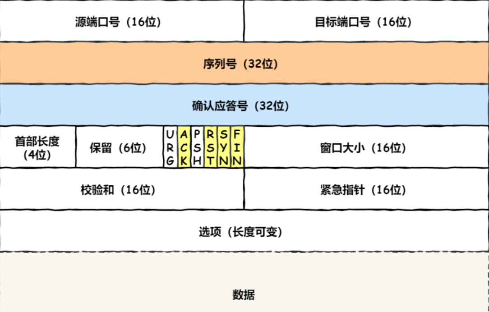
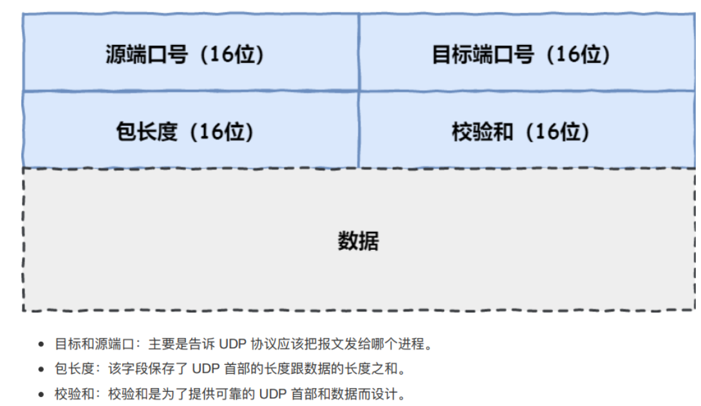
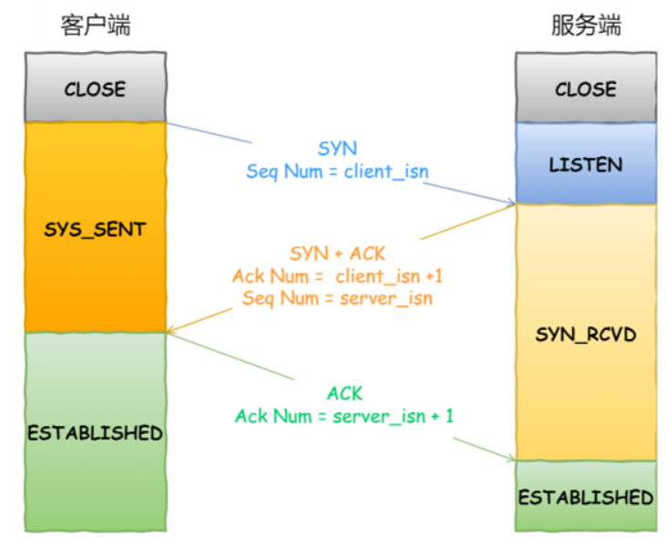
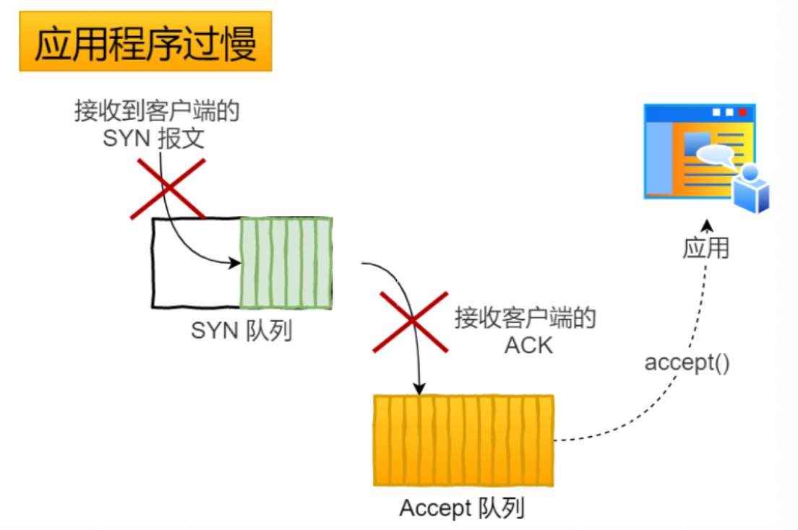
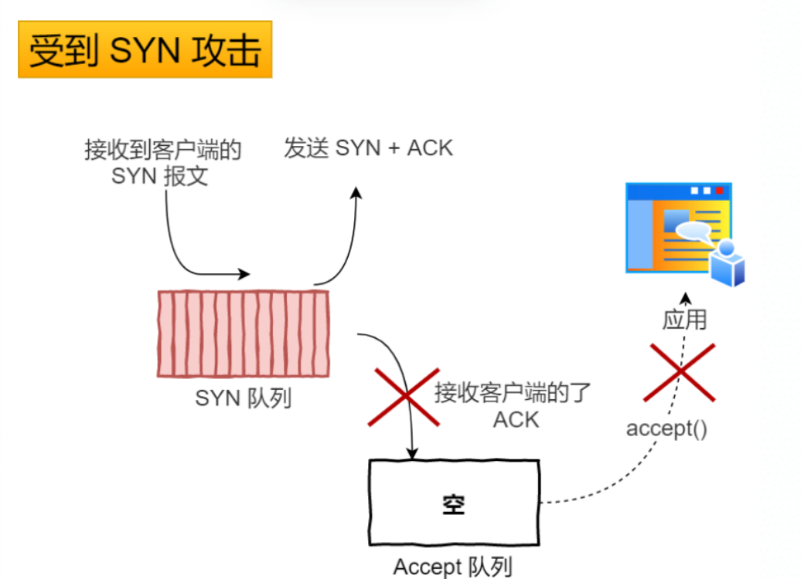
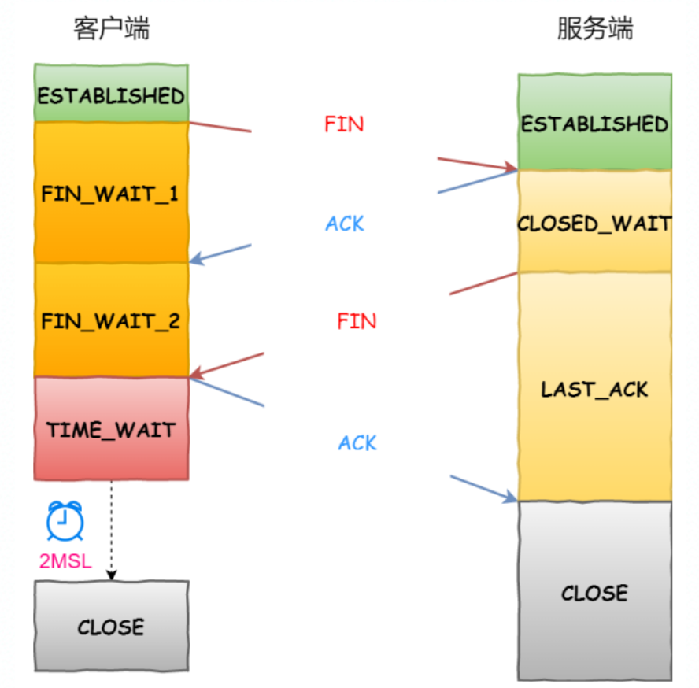
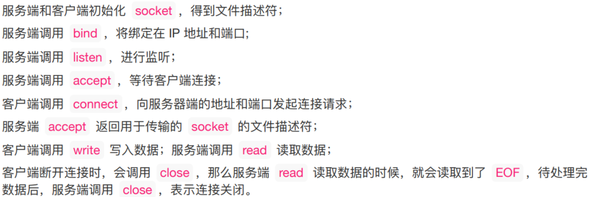
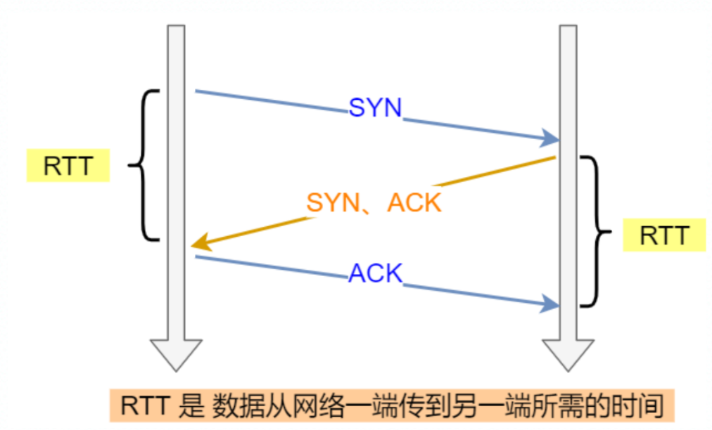
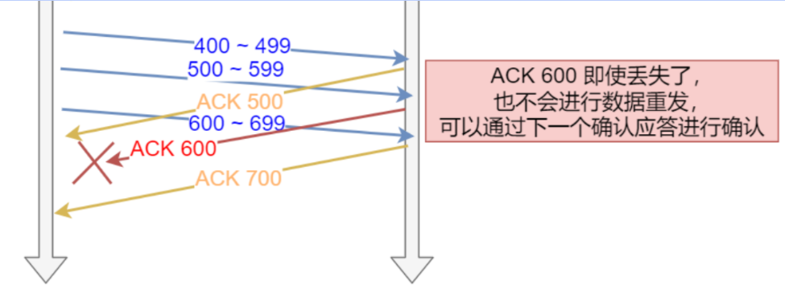
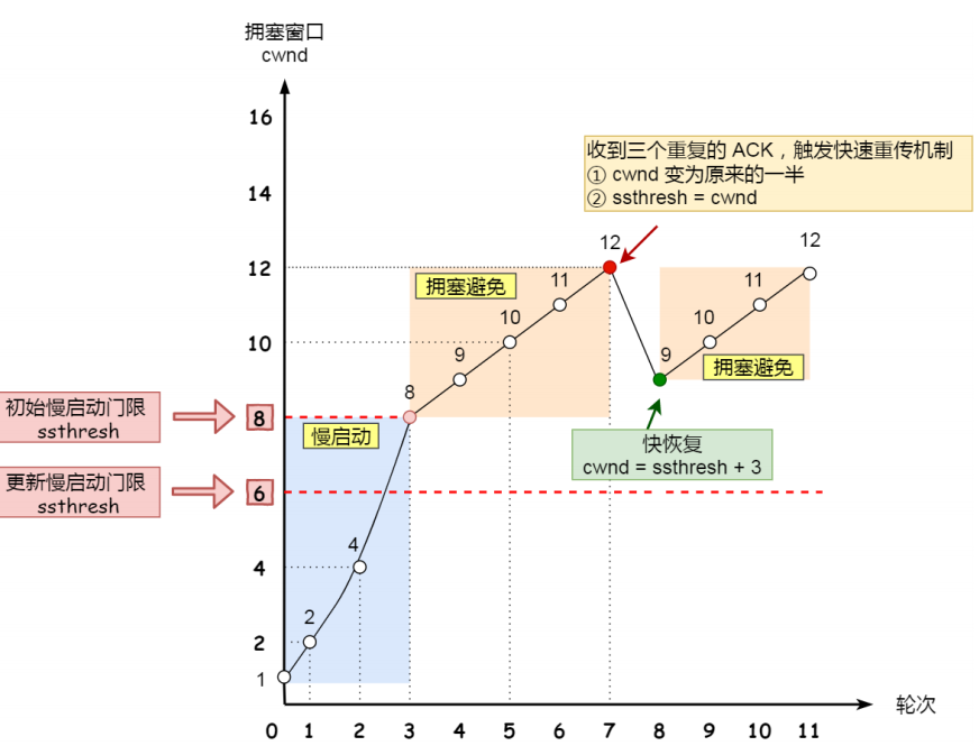

是什么
- TCP 是⾯向连接的、可靠的、基于字节流的传输层通信协议 。
- TCP 四元组可以唯⼀的确定⼀个连接，四元组包括如下： 源地址 源端⼝ ⽬的地址 ⽬的端⼝ 。
- 源地址和⽬的地址的字段（32位）是在 IP 头部中，作⽤是通过 IP 协议发送报⽂给对⽅主机。
- 源端⼝和⽬的端⼝的字段（16位）是在 TCP 头部中，作⽤是告诉 TCP 协议应该把报⽂发给哪个进程。
服务端最⼤并发 TCP 连接数远不能达到理论上限。
主要是⽂件描述符限制，Socket 都是⽂件，所以⾸先要通过 ulimit 配置⽂件描述符的数⽬。
另⼀个是内存限制，每个 TCP 连接都要占⽤⼀定内存，操作系统的内存是有限的。
头部格式

序列号：在建⽴连接时由计算机⽣成的随机数作为其初始值，通过 SYN 包传给接收端主机，每发送⼀次数据，就「累加」⼀次该「数据字节数」的⼤⼩。⽤来解决⽹络包乱序问题。
确认应答号：指下⼀次「期望」收到的数据的序列号，发送端收到这个确认应答以后可以认为在这个序号以前的数据都已经被正常接收。⽤来解决不丢包的问题。
控制位：
- ACK：该位为 1 时，「确认应答」的字段变为有效，TCP 规定除了最初建⽴连接时的 SYN 包之外该位必须设置为 1 。
- RST：该位为 1 时，表示 TCP 连接中出现异常必须强制断开连接。
- SYN：该位为 1 时，表示希望建⽴连接，并在其「序列号」的字段进⾏序列号初始值的设定。
- FIN：该位为 1 时，表示今后不会再有数据发送，希望断开连接。当通信结束希望断开连接时，通信双⽅的主机之间就可以相互交换 FIN 位为 1 的 TCP 段。
TCP vs UDP

TCP 和 UDP 区别：
- 连接
TCP 是⾯向连接的传输层协议，传输数据前先要建⽴连接。
UDP 是不需要连接，即刻传输数据。 - 服务对象
TCP 是⼀对⼀的两点服务，即⼀条连接只有两个端点。
UDP ⽀持⼀对⼀、⼀对多、多对多的交互通信 - 可靠性
TCP 是可靠交付数据的，数据可以⽆差错、不丢失、不᯿复、按需到达。
UDP 是尽最⼤努⼒交付，不保证可靠交付数据。 - 拥塞控制、流量控制
TCP 有拥塞控制和流ᰁ控制机制，保证数据传输的安全性。UDP 则没有，即使⽹络⾮常拥堵了，也不会影响 UDP 的发送速率。 - ⾸部开销
TCP ⾸部⻓度较⻓，会有⼀定的开销，⾸部在没有使⽤「选项」字段时是 20 个字节，如果使⽤了「选项」字段则会变⻓的。
UDP ⾸部只有 8 个字节，并且是固定不变的，开销较⼩。 - 传输⽅式
TCP 是流式传输，没有边界，但保证顺序和可靠。
UDP 是⼀个包⼀个包的发送，是有边界的，但可能会丢包和乱序。 - 分⽚不同
TCP 的数据⼤⼩如果⼤于 MSS ⼤⼩，则会在传输层进⾏分⽚，⽬标主机收到后，也同样在传输层组装 TCP数据包，如果中途丢失了⼀个分⽚，只需要传输丢失的这个分⽚。
UDP 的数据⼤⼩如果⼤于 MTU ⼤⼩，则会在 IP 层进⾏分⽚，⽬标主机收到后，在 IP 层组装完数据，接着再传给传输层，但是如果中途丢了⼀个分⽚，在实现可靠传输的 UDP 时则就需要重传所有的数据包，这样传输效率⾮常差，所以通常 UDP 的报⽂应该⼩于 MTU。
TCP 和 UDP 应⽤场景：
由于 TCP 是⾯向连接，能保证数据的可靠性交付，因此经常⽤于：
FTP ⽂件传输
HTTP / HTTPS由于 UDP ⾯向⽆连接，它可以随时发送数据，再加上UDP本身的处理既简单⼜⾼效，因此经常⽤于：
包总数较少的通信，如 DNS 、 SNMP 等
视频、⾳频等多媒体通信
⼴播通信
三次握手

注意序列号和确认应答号的变化。
第三次握手可以携带数据。
注意序列号和确认应答号的变化。
第三次握手可以携带数据。
为什么是三次？
- 避免历史连接！！！。
- 同步双方序列号（去重，按序接收）。
- 避免资源浪费。（只有两次，客户端的syn阻塞，就会重新发送syn，那么服务端每收到一个syn就要建立连接。）
- 在⽹络拥堵情况下，⼀个「旧 SYN 报⽂」⽐「最新的 SYN 」 报⽂早到达了服务端；
- 那么此时服务端就会回⼀个 SYN + ACK 报⽂给客户端；
- 客户端收到后可以根据⾃身的上下⽂，判断这是⼀个历史连接（序列号过期或超时），那么客户端就会发送RST 报⽂给服务端，表示中⽌这⼀次连接。
- 如果是两次握⼿连接，就不能判断当前连接是否是历史连接，三次握⼿则可以在客户端（发送⽅）准备发送第三次报⽂时，客户端因有⾜够的上下⽂来判断当前连接是否是历史连接。
既然 IP 层会分⽚，为什么 TCP 层还需要 MSS 呢？
MTU ：⼀个⽹络包的最⼤⻓度，以太⽹中⼀般为 1500 字节；
MSS ：除去 IP 和 TCP 头部之后，⼀个⽹络包所能容纳的 TCP 数据的最⼤⻓度；
- 当 IP 层有⼀个超过 MTU ⼤⼩的数据（TCP 头部 + TCP 数据）要发送，那么 IP 层就要进⾏分⽚，把数据分⽚成若⼲⽚，保证每⼀个分⽚都⼩于 MTU。把⼀份 IP 数据报进⾏分⽚以后，由⽬标主机的 IP 层来进⾏组装后，再交给上⼀层 TCP 传输层。
- 那么当如果⼀个 IP 分⽚丢失，整个 IP 报⽂的所有分⽚都得重传。
- 因为 IP 层本身没有超时重传机制，它由传输层的 TCP 来负责超时和重传。
- 当接收⽅发现 TCP 报⽂（头部 + 数据）的某⼀⽚丢失后，则不会响应 ACK 给对⽅，那么发送⽅的 TCP 在超时后，就会重发「整个 TCP 报⽂（头部 + 数据）」。
什么是 SYN 攻击？如何避免 SYN 攻击？
攻击者短时间伪造不同 IP 地址的 SYN 报⽂，服务端每接收到⼀个 SYN 报⽂，就进⼊ SYN_RCVD 状态，但服务端发送出去的 ACK + SYN 报⽂，⽆法得到未知 IP 主机的ACK 应答，久⽽久之就会占满服务端的 SYN 接收队列（未连接队列），使得服务器不能为正常⽤户服务。


解决办法：
控制该队列的最⼤值：SYN_RCVD 状态连接的最⼤个数：net.core.netdev_max_backlog
- tcp_syncookies 的⽅式可以应对 SYN 攻击的⽅法：
net.ipv4.tcp_syncookies = 1
当 「 SYN 队列」满之后，后续服务器收到 SYN 包，不进⼊「 SYN 队列」；
计算出⼀个 cookie 值，再以 SYN + ACK 中的「序列号」返回客户端，
服务端接收到客户端的应答报⽂时，服务器会检查这个 ACK 包的合法性。如果合法，直接放⼊到「Accept队列」。
四次挥手

关闭连接时，客户端向服务端发送 FIN 时，仅仅表示客户端不再发送数据了但是还能接收数据。服务器收到客户端的 FIN 报⽂时，先回⼀个 ACK 应答报⽂，⽽服务端可能还有数据需要处理和发送，等服务端不再发送数据时，才发送 FIN 报⽂给客户端来表示同意现在关闭连接。
为什么 TIME_WAIT 等待的时间是 2MSL
MSL 是 Maximum Segment Lifetime，报⽂最⼤⽣存时间，它是任何报⽂在⽹络上存在的最⻓时间，超过这个时间报⽂将被丢弃。
⽹络中可能存在来⾃发送⽅的数据包，当这些发送⽅的数据包被接收⽅处理后⼜会向对⽅发送响应，所以⼀来⼀回需要等待 2 倍的时间。
⽐如如果被动关闭⽅没有收到断开连接的最后的 ACK 报⽂，就会触发超时重发 Fin 报⽂，另⼀⽅接收到 FIN 后，会重发 ACK 给被动关闭⽅， ⼀来⼀去正好 2 个 MSL。
在 Linux 系统⾥ 2MSL 默认是 60 秒，那么⼀个 MSL 也就是 30 秒。Linux 系统停留在 TIME_WAIT 的时间为固定的 60 秒。
需要 TIME-WAIT 状态
- 防⽌具有相同「四元组」的「旧」数据包被收到；
经过 2MSL 这个时间，⾜以让两个⽅向上的数据包都被丢弃，使得原来连接的数据包在⽹络中都⾃然消失，再出现的数据包⼀定都是新建⽴连接所产⽣的。 - 保证「被动关闭连接」的⼀⽅能被正确的关闭，即保证最后的 ACK 能让被动关闭⽅接收。
如果已经建⽴了连接，但是客户端突然出现故障了怎么办？
TCP 有⼀个机制是保活机制。这个机制的原理是这样的：ping-pong
定义⼀个时间段，在这个时间段内，如果没有任何连接相关的活动，TCP 保活机制会开始作⽤，每隔⼀个时间间隔，发送⼀个探测报⽂，该探测报⽂包含的数据⾮常少，如果连续⼏个探测报⽂都没有得到响应，则认为当前的TCP 连接已经死亡，系统内核将错误信息通知给上层应⽤程序。
socket编程？
连接过程

listen 时候参数 backlog 的意义？
参数⼀ socketfd 为 socketfd ⽂件描述符
参数⼆ backlog，这参数在历史版本有⼀定的变化
在早期 Linux 内核 backlog 是 SYN 队列⼤⼩，也就是未完成的队列⼤⼩。
在 Linux 内核 2.2 之后，backlog 变成 accept 队列，也就是已完成连接建⽴的队列⻓度，所以现在通常认为backlog 是 accept 队列长度
客户端 connect 成功返回是在第⼆次握⼿，服务端 accept 成功返回是在三次握⼿成功之后。
可靠传输
序列号、确认应答、重发控制、连接管理以及窗⼝控制等。
自动重传请求（Automatic Repeat-reQuest，ARQ）
OSI模型中数据链路层的错误纠正协议之一。它通过使用确认和超时这两个机制，在不可靠服务的基础上实现可靠的信息传输。如果发送方在发送后一段时间之内没有收到确认帧，它通常会重新发送。
当发送窗口和接收窗口的大小都等于 1时，就是停止等待协议。
当发送窗口大于1，接收窗口等于1时，就是回退N步协议。
当发送窗口和接收窗口的大小均大于1时，就是选择重发协议
重传机制
序列号与确认应答！
超时重传-数据包丢失，确认应答丢失。

当超时时间 RTO 较⼤时，重发就慢，没有效率，性能差；
当超时时间 RTO 较⼩时，会导致可能并没有丢就重发。
超时重传时间 RTO 的值应该略⼤于报⽂往返 RTT 的值。
如果超时重发的数据，再次超时的时候，TCP 的策略是超时间隔加倍。
也就是每当遇到⼀次超时重传的时候，都会将下⼀次超时时间间隔设为先前值的两倍。两次超时，就说明⽹络环境差，不宜频繁反复发送。
快速重传
三次同样的ACK。
SACK
SACK （ Selective Acknowledgment 选择性确认）。
这种⽅式需要在 TCP 头部「选项」字段⾥加⼀个 SACK 的东⻄，它可以将缓存的地图发送给发送⽅，这样发送⽅就可以知道哪些数据收到了，哪些数据没收到，知道了这些信息，就可以只重传丢失的数据。
D-SACK
滑动窗口
窗⼝⼤⼩就是指⽆需等待确认应答，⽽可以继续发送数据的最⼤值。
累计确认：

流量控制
怎么让发送⽅避免发送⼩数据呢？
发送⽅通常的策略:
使⽤ Nagle 算法，该算法的思路是延时处理，它满⾜以下两个条件中的⼀条才可以发送数据：
窗⼝⼤⼩ >= MSS 或是 数据⼤⼩ >= MSS
收到之前发送数据的 ack 回包
只要没满⾜上⾯条件中的⼀条，发送⽅⼀直在囤积数据，直到满⾜上⾯的发送条件。
另外，Nagle 算法默认是打开的，可以在 Socket 设置 TCP_NODELAY 选项来关闭这个算法。
拥塞控制
什么是拥塞窗⼝？和发送窗⼝有什么关系呢？
拥塞窗⼝ cwnd是发送⽅维护的⼀个的状态变量，它会根据⽹络的拥塞程度动态变化的。
我们在前⾯提到过发送窗⼝ swnd 和接收窗⼝ rwnd 是约等于的关系，那么由于加⼊了拥塞窗⼝的概念后，此时发送窗⼝的值是swnd = min(cwnd, rwnd)，也就是拥塞窗⼝和接收窗⼝中的最⼩值。
只要⽹络中没有出现拥塞， cwnd 就会增⼤；
但⽹络中出现了拥塞， cwnd 就减少；
那么怎么知道当前⽹络是否出现了拥塞呢？
其实只要「发送⽅」没有在规定时间内接收到 ACK 应答报⽂，也就是发⽣了超时重传，就会认为⽹络出现了⽤拥塞。
拥塞控制有哪些控制算法？
慢启动
拥塞避免
快重传
快恢复
